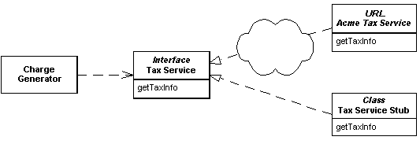
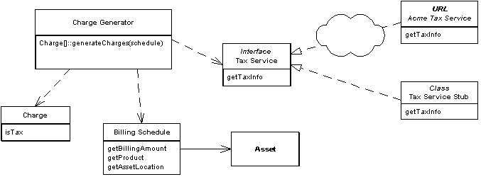

| Home | Articles | Talks | Links | Contact Me | ISA | ThoughtWorks |
by David Rice
A stand-in implementation of an external service

Business systems are quite often dependent upon access to third party services such as credit scoring, tax rate lookups, or a pricing engine. These services are often not only third party, but also provided by a remote or external resource. Any developer who has built such an application can speak to the frustration of being dependent upon resources completely out of his control. Feature delivery, reliability, and performance are all unpredictable.
At the very least such issues will slow the development process. Developers will sit around waiting for the service to come back on line or maybe put some hacks into the code to compensate for yet to be delivered features. Much worse, and quite likely, such dependencies will lead to periods in time when tests cannot execute. When tests cannot run the development process is broken.
What is needed is a stand-in implementation of this service. One whose development is completely within the control of the application team and one that runs locally, fast, and in-memory. This stand-in code is often referred to as a Service Stub.
The first step is to define access to this service with an interface. If your service provider has already provided an interface for your platform be sure to read the note at the bottom of this section on interface design. Once the interface is defined and an implementation or two has been coded it's simply a matter of using the Plugin pattern to provide the proper implementations of services to your application at runtime.
As with most all design the key principal to stub implementation is keeping it simple. Since the primary reason behind writing a stub is to speed and ease the development process, writing a complex stub defeats its own purpose.
Let's walk through the thought process of stubbing a sales tax service. Code examples are provided below. This service provides state sales tax amount and rate, given an address, product type, and sales amount. The first question to ask when stubbing is 'What's the simplest possible means of providing this service?' The answer is to write a 2 or 3 line implementation that uses a flat tax rate for all requests.
But tax laws aren't that simple. Certain products are exempt from taxation in certain states. As such rules are part of tax law we're dependent upon our tax service for such information. And we have a lot of functionality that is dependent upon whether taxes are charged so we need to accommodate the possibility of tax exemption in our service. Now ask what is the simplest means of adding this to the stub? It's probably to add an if statement and simply for a specific combination of address and product. The number of lines of code in our stub can probably still be counted on one hand.
If you're building one of those fantastically large back office applications with 10,000+ functions points and as many unit tests you might even add some more dynamic functionality to your stub. We might wish to add a method to the service that allows tests to setup exemptions for themselves. We could even provide reset functionality for test cleanup.
Even with the addition of dynamic functionality the stub is incredibly simple. We've only added a map and some simple lookup code. If you've ever dealt with state and local sales tax laws you know they are beyond complicated. A switch to a flat tax would indeed put tens of thousands of accountants and lawyers out of work! Keep the stub simple enough so that it doesn't break under its own weight. If the stub is too simple to possibly work it's probably a good stub. Always remember that the primary purpose of Service Stub is to speed up development.
The last, more dynamic stub above brings up an interesting question regarding the dependency between test cases and a Service Stub. The stub relies upon a method for adding exemptions that is not in the service interface. This implies that the test case has some prior knowledge as to the type of the tax service that will be loading during its execution. This defeats the purpose of using the Plugin pattern to load the stub implementation.
Two solutions come to mind: The first is to add the test methods to the public interface. Throw assertions or system exceptions in the production implementation of these methods. If you're writing to a 3rd party interface you will need to extend the interface.
Another alternative is possible if your tests cases don't require that the stub be configured and reset between each case. Simply have the stub configure itself. If a developer adds a test case she must make sure that all of the available stubs can provide appropriate behavior for this test case. This avoids compilation dependencies and seems a reasonable compromise to the logical dependency problem. There is no way around the fact that some coordination is required between your stubs and your tests.
A note on interface definition:
Perhaps the service provider supplies a well designed SDK for your particular platform and this work has already been done for you. Otherwise you'll have to do it yourself. I've seen instances where the application developers might someday -- 'in theory' -- switch vendors for a particular service, therefore despite the existence of a perfectly good interface supplied by a vendor the application team goes ahead and defines its own interface. The application is providing its own definition of the service. This is over-design. It's too much work and results in unreadable code and a debugging nightmare. Writing to the vendor interface is clean enough. A switch in vendors, if the services are in fact similar, will require merely a simple refactoring of the code that calls that interface.
Deciding to use Service Stub is a simple task. Ask yourself these questions to determine whether to use Service Stub
If you find yourself answering yes by all means go ahead and write the stub. Just never forget that a stub is meant to make your life easier rather than more difficult.
Our sales tax service is being used by the A/R subsystem of a lease management system. Within this system billing schedules store information as to when to generate charges for each leased asset. Each night a charge generation process inspects each billing schedule and generates appropriate charges. For each charge a call to the tax service is made in order to generate any tax charges.
Figure 1:
What is the point of such a long winded description of a leasing A/R subsystem? It's that a Service Stub makes no sense unless you're actually testing functionality that is dependent upon that service. Here we have a charge generation service that is creating extra charges if taxes ought to be charged. Our A/R subsystem has lots of behavior dependent upon whether tax charges were created. But our tax system is a web service and we're having massive downtime problems. Sounds like an ideal candidate for a stub.
Since we've decided to use a tax service that has been deployed as a web service the first thing we need to do is write a Java interface to define the service. While we've been given a nice WSDL interface that's not something we want to write to from our domain layer so we'll define our own Java interface:
class SalesTaxService...
public interface SalesTaxService {
public static final SalesTaxService INSTANCE = (SalesTaxService) PluginFactory.getPlugin(SalesTaxService.class);
public TaxInfo getSalesTaxInfo(String productCode, Address addr, Money saleAmount);
}
Note the use of Plugin to load the service implementation.
The application code that we're working on here is charge generation and we want to test that the generator will return a single charge if a product is exempt from taxation and an additional state sales tax charge if the product is not exempt. We also want to test the returned charges are of the correct type. So let's write our test:
class Tester...
public void setUp() throws Exception {
exemptBillingSchedule =
new BillingSchedule(new Money(200, Currency.USD), "12300", CHICAGO_ILLINOIS);
nonExemptBillingSchedule =
new BillingSchedule(new Money(200, Currency.USD), "12305", CHICAGO_ILLINOIS);
}
public void testChargeGenerationExemptProduct() throws Exception {
Charge[] charges = new ChargeGenerator().calculateCharges(exemptBillingSchedule);
assertEquals("single charge", charges.length, 1);
assertTrue("non tax charge", !charges[0].isTax());
assertEquals("correct charge", charges[0].getAmount(),
exemptBillingSchedule.getBillingAmount());
}
public void testChargeGenerationNonExemptProduct() throws Exception {
Charge[] charges = new ChargeGenerator().calculateCharges(nonExemptBillingSchedule);
assertEquals("two charges", charges.length, 2);
assertTrue("non tax charge", !charges[0].isTax());
assertTrue("tax charge", charges[1].isTax());
assertEquals("correct charge", charges[0].getAmount(),
nonExemptBillingSchedule.getBillingAmount());
assertEquals("correct tax", charges[1].getAmount(), new Money(10, Currency.USD));
}
Given these tests we can use the 'middle of the road' stub approach from above and write a service implementation that looks for a particular product and location to determine exemption status:
class ExemptProductTaxService...
As we discussed above there are a few trade-offs to think about when approaching the test case to stub dependency issue. Here we have values hard coded in both the test case and the stub. There's no way around this when testing so just choose a sensible approach.
Here's what the simplest possible service would look like:
class FlatSalesTaxService...
public TaxInfo getSalesTaxInfo(String productCode, Address addr, Money saleAmount) {
return new TaxInfo(FLAT_RATE, saleAmount.multiply(FLAT_RATE.doubleValue()));
}
Here's what the dynamic tax service might look like:
class TestTaxService...
 |  |